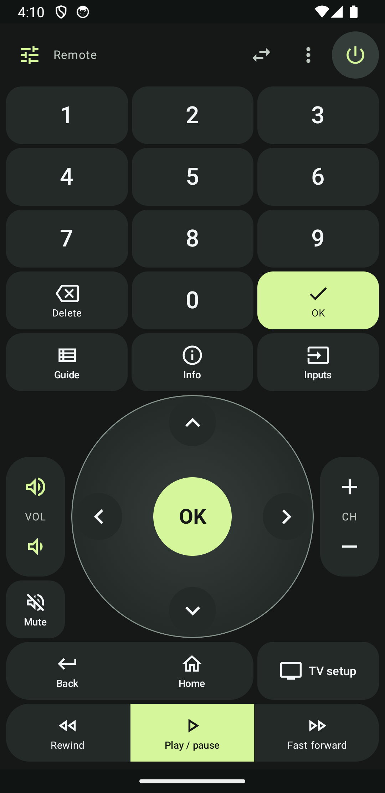
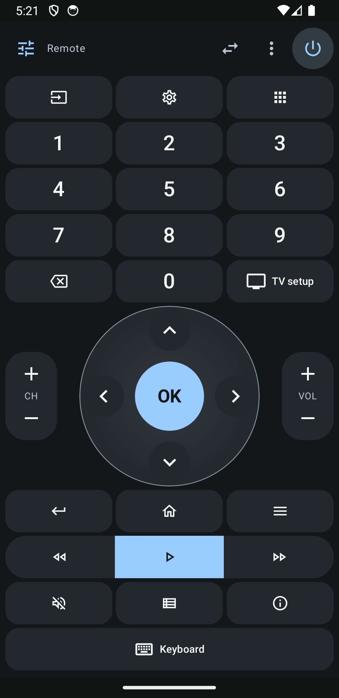
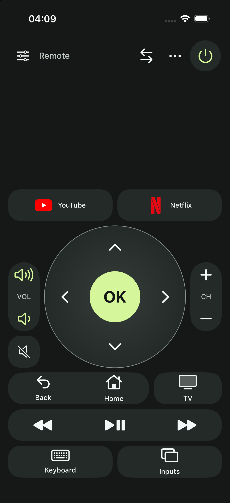

Your phone.
Your remote.
A free, open-source remote for your TV. Find your TV, connect, and make the controls your own. No subscription, ads or account required.
{{BUILD_LABEL}}One remote. Your layout.
Big controls, familiar buttons, and a look you can make your own. Swipe through the remotes on your phone, or open any image at full size.






Actual development-app captures using local test devices. Example layouts and available controls vary by TV and connection.
Connect in a few steps
- Install on your Android phone
Download the APK and open it. If Android asks, allow your browser to install this app.
- Find your TV
Keep your phone and TV on the same local network, open OpenTV-Remote, and choose the discovered TV. If discovery cannot find it, use Connect by IP with the TV’s local address.
- Approve the connection
Follow the pairing or approval instructions for your TV. Available controls adapt to the connection’s capabilities.
Change the interface language in OpenTV-Remote through the remote menu → Language, or the globe button on the Devices screen. Choose System, English or Русский.
Install on your iPhone
The iPhone app is available as source. You need a Mac with Xcode, an iPhone running iOS 17 or later, and your Apple Account. There is no App Store, TestFlight or signed IPA download yet. The Android APK cannot install on an iPhone.
{{IOS_SOURCE_LINK}}Open the step-by-step iPhone guide
- Get the project on your Mac
Download and unzip the source, or clone the GitHub repository. Install Xcode from the Mac App Store, open it once, and finish its component installation.
- Connect and trust your iPhone
Connect it to your Mac with a USB cable, unlock it, and tap Trust if “Trust This Computer?” appears. Keep the phone unlocked during the initial setup.
- Open the iOS project
Open
ios/LumaRemote.xcodeprojin Xcode. Choose the LumaRemote scheme and your connected iPhone as the run destination. The internal project name stays LumaRemote; the installed app is named OpenTV-Remote. - Select your own signing team
In Xcode Settings → Accounts, sign in with your Apple Account. Select the LumaRemote target → Signing & Capabilities, enable Automatically manage signing, and select your own team. A free account appears as a Personal Team. Your Apple password and signing keys do not belong in this repository or on this website.
- Enable Developer Mode
After Xcode pairs the phone, open iPhone Settings → Privacy & Security → Developer Mode. Turn it on, restart when prompted, then unlock and confirm. If the option is missing, open Xcode’s Device Hub (or Devices and Simulators on older Xcode versions), select the connected phone, and complete pairing first.
- Build and run
Select your iPhone in Xcode and press Run ▶. Let Xcode finish installing. If the phone asks you to trust your developer identity, follow the prompt; see troubleshooting below. You can then open OpenTV-Remote from its Home Screen icon.
- Connect to your TV
Put the iPhone and TV on the same local network. Allow Local Network access, select a discovered TV, and follow its pairing/approval prompt. If discovery misses your TV, try Connect by IP. Choose English or Russian from the remote menu → Language.
Installation troubleshooting
“Untrusted Developer” or “Developer App”
Open iPhone Settings → General → VPN & Device Management. If your own Apple Account appears under Developer App, select it and follow the trust/verify prompt. Then reopen the app. If that entry is absent, return to Xcode and read its device/signing message. Use your own development identity; no third-party enterprise profile is required. Apple’s Personal Team setup example.
Developer Mode is missing
The switch appears after development pairing is initiated. Unlock the phone, trust the Mac, and select it in Xcode’s Device Hub. Then check Privacy & Security again. Apple’s Developer Mode guide.
Xcode says the bundle identifier is unavailable
For a new personal copy, choose a unique Bundle Identifier in Signing & Capabilities, such as one under your own name. Changing an existing installation’s identifier creates a separate app; its old pairing/layout data will not move automatically. Keep an existing identifier/team when renewing a working installation.
The app stopped opening after a week
A free development profile may have expired. Reconnect the phone, open the same Xcode project with the same team/identifier, and Run again. Do not delete the app as the first step.
No TV appears, or the network permission was denied
Make sure both devices are on the same local network. Enable Local Network access for OpenTV-Remote in iPhone Settings and retry. Android TV discovery and manual IP are available; automatic Samsung/LG SSDP discovery on physical iPhones needs Apple’s restricted multicast entitlement, so use Connect by IP when necessary. No TV Companion app or casting setup is required.